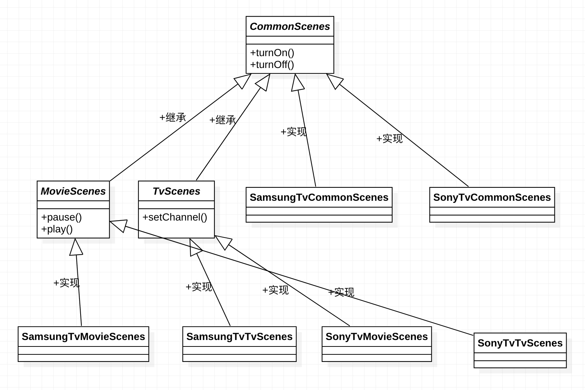
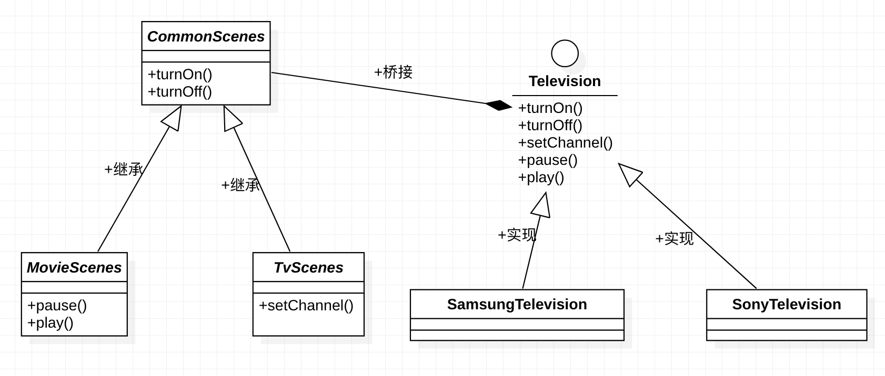

类别：结构型设计模式
目的：将抽象和实现按维度拆分成两部分（通常两类接口），使得两部分都可以独立的进行迭代（变化），防止类数量爆发式增长
完整代码参考：https://1drv.ms/u/s!AquRvPzqx59Ri33d5NhvwuPkHa8F?e=LLClnq
典型场景
被抽象数量比较多时，新增特性导致抽象数量可能会骤增（比如一个特性就增加2-3个类）就可以考虑使用桥接模式了
比如抽象万能电视机遥控场景、存在多个遥控场景(每个场景功能不一样)，以及要适配多种电视类型
再比如造车，存在多种类型的车（卡车、公交车、小轿车等），每种类型的车的生产过程不尽相同
这里拿万能遥控器场景举例，场景参考如下：
- 基本遥控场景：开机、关机
- 看电视台场景：选择电视台、同时也可以开关机
- 看电影场景：播放、暂停、开关机等
可以看到这个场景是有层级结构的，比如电视台场景就涵盖了基本的开关机场景
目前举例适配的电视类型参考如下：
- 索尼电视
- 三星电视
可以看到这个电视类型的适配可能会更多
抽象场景
这里使用抽象类来抽象遥控场景
1. 基本遥控场景
abstract public class CommonScenes {
abstract public void turnOn();
abstract public void tureOff();
}
2. 看电视台场景
abstract public class TvScenes extends CommonScenes {
abstract void setChannel();
}
3. 看电影场景
abstract public class MovieScenes extends CommonScenes {
abstract void pause();
abstract void play();
}
实现不同类型电视的场景操作对应的具体代码
然后对抽象进行具体的实现，可以估计到实现数量会比较多：比如场景有n个，电视机类型有m个，每个电视机类型都把n个场景实现一遍，那么实现的数量就是n*m个，随着n或者m的增加，具体实现的数量会骤增，参考如下：
| 实现 | class |
|---|---|
| 三星基本遥控场景实现 | SamsungTvCommonScenes.java |
| 三星电影场景实现 | SamsungTvMovieScenes.java |
| 三星看电视场景实现 | SamsungTvTvScenes.java |
| 索尼基本遥控场景实现 | SonyTvCommonScenes.java |
| 索尼电影场景实现 | SonyTvMovieScenes.java |
| 索尼看电视场景实现 | SonyTvTvScenes.java |
这里拿三星看电视场景实现举例实现参考如下：
public class SamsungTvTvScenes extends TvScenes {
@Override
void setChannel() {
// 使用三星电视sdk操作三星电视切换电视台
System.out.println("samsung tv set channel");
}
@Override
public void turnOn() {
// 使用三星电视sdk开机
System.out.println("samsung tv turn on");
}
@Override
public void tureOff() {
// 使用三星电视sdk关机
System.out.println("samsung tv turn off");
}
}
代码层级结构参考如下：

可以看到随着场景/电视机类型的增加，实现的具体数量将会骤增，不利于扩展，这时候就可以使用桥接设计模式了
模式实现
将上面的场景和电视机类型这两个维度进行拆分成两个抽象：场景抽象和电视机抽象，职责参考如下：
- 电视机抽象：只负责抽象电视机、并实现抽象里的功能
- 场景抽象：只负责抽象场景、控制电视机的具体逻辑交给电视机抽象的实现
电视机抽象接口如下
public interface Television {
void turnOn();
void tureOff();
void setChannel();
}
不同的电视机类型实现这个电视机接口即可，比如三星电视参考如下：
public class SamsungTelevision implements Television {
@Override
public void turnOn() {
System.out.println("samsung tv turn on");
}
@Override
public void tureOff() {
System.out.println("samsung tv turn off");
}
@Override
public void setChannel() {
System.out.println("samsung tv set channel");
}
}
这样场景只需要持有不同电视机类型的引用即可，不需要为不同的电视机类型单独抽象了，参考如下
public class CommonScenes {
private Television television; // 持有电视机的引用
public CommonScenes(Television television) {
this.television = television;
}
public void turnOn() {
television.turnOn();
}
public void tureOff() {
television.tureOff();
}
}
UML

为什么桥接模式更好
两个维度都可以单独进行扩展了，比如新增加一个场景或者新增加一个电视机类型，不会造成类数量骤增了，场景和电视机这两个维度通过组合实现完整的场景，比如三星电视看电影场景组合代码参考如下：
Television samsumngTelevision = new SamsungTelevision();
MovieScenes movieScenes = new MovieScenes(samsumngTelevision);// 组合
movieScenes.pause();
movieScenes.play();
一些注意的点
通过桥接按维度拆分成可独立扩展的部分，然后通过组合形成完整的使用场景